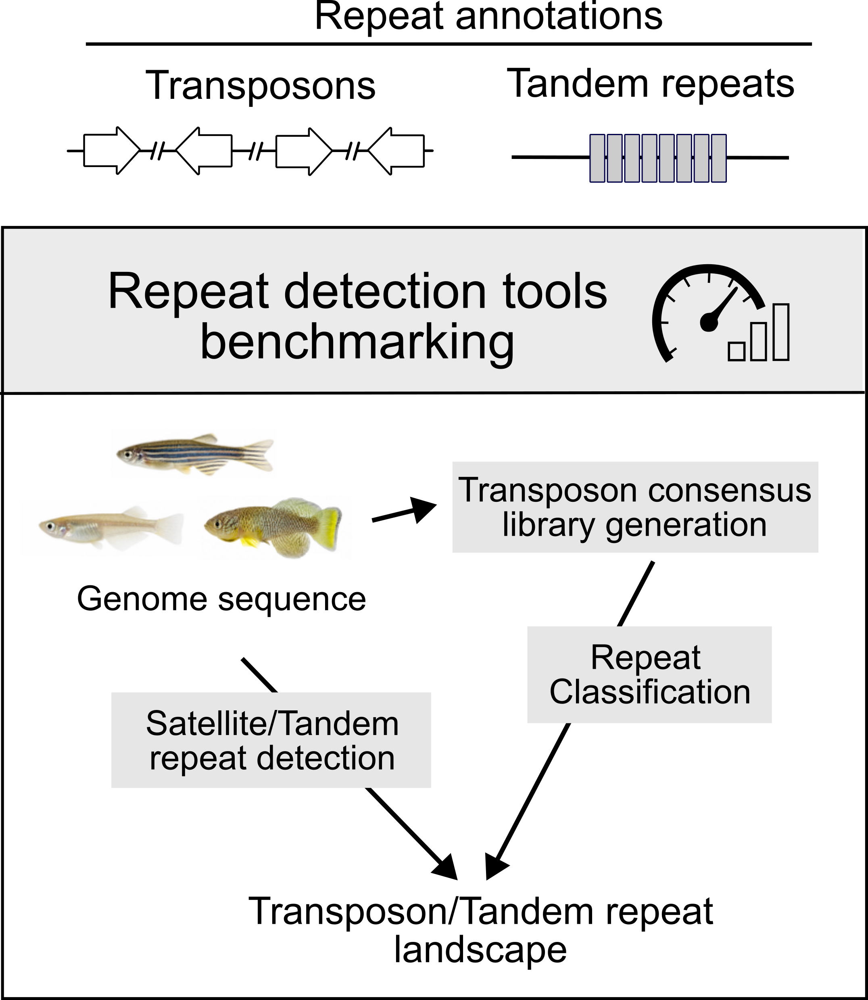
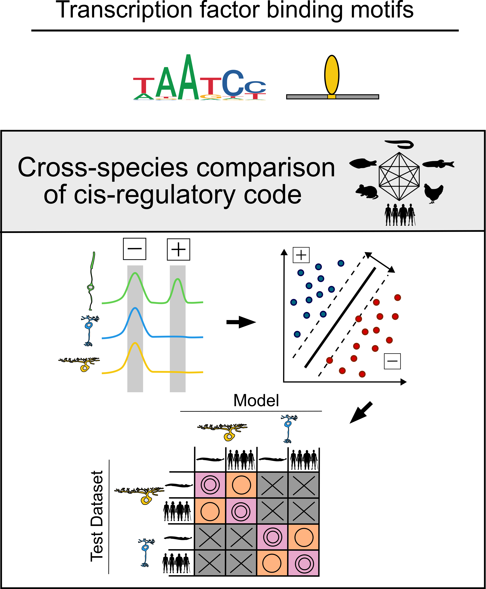

現在の研究
ゲノム配列の多様性と、細胞の個性を生み出す遺伝子制御の仕組みを調べています。
ゲノムの繰り返し配列を正確に読み解く
工樂樹洋博士との共同研究
ゲノムには、移動やコピーの増加を通じて広がるトランスポゾンや、同じ配列が連続するタンデムリピートが数多く含まれます。こうした「繰り返し配列」は、量や種類が生物種によって大きく異なり、ゲノムの構造と進化を理解する手がかりになります。
短寿命の魚ターコイズキリフィッシュを中心に、高品質なゲノム配列を用いて、複数のリピート検出・分類手法を比較しています。トランスポゾンとタンデムリピートを一体として評価し、手法の選び方が検出される領域や種間比較の結果にどう影響するかを調べています。
さらに、トランスポゾン由来の配列がどの組織で発現し、加齢や性差とどう関係するのかを、ゲノム上の個々の場所（座位）ごとに解析しています。配列を正確に捉えることを出発点に、繰り返し配列の生物学的な意味を明らかにすることを目指しています。

視細胞の遺伝子制御を種間で比較する
Joseph C. Corbo博士との共同研究
進化の過程でDNA配列が大きく変わっても、似た働きをもつ細胞はどのように維持されるのでしょうか。2025年の研究では、ヤツメウナギからヒトまで6種の網膜を比較し、6つの主要な細胞クラスのそれぞれで、遺伝子の働きを調節する「シス制御コード」が5億年以上にわたり種間で保存されていることを示しました。
鍵となるのは、転写因子が認識する短いDNA配列（モチーフ）の組み合わせです。個々の制御領域の配列が変化しても、細胞クラスに特徴的なモチーフの組み合わせには種を超えた共通性があります。シングルセルATAC-seqと配列解析を用い、DNA配列を直接対応づけるだけでは見えない共通の制御の仕組みを調べています。
現在は、網膜の細胞クラスに加えて、光を受け取る視細胞のタイプごとの比較へと研究を広げています。種間で共通する制御の仕組みとタイプごとの違いを調べ、視細胞の多様性がどのように進化したのかを探っています。

関連論文
Y. Ogawa, Y. Liu, C. A. Myers, A. Morshedian, G. L. Fain, A. P. Sampath, J. C. Corbo, Conservation of cis-regulatory codes over half a billion years of evolution. Sci. Adv. 11, eadw7681 (2025).